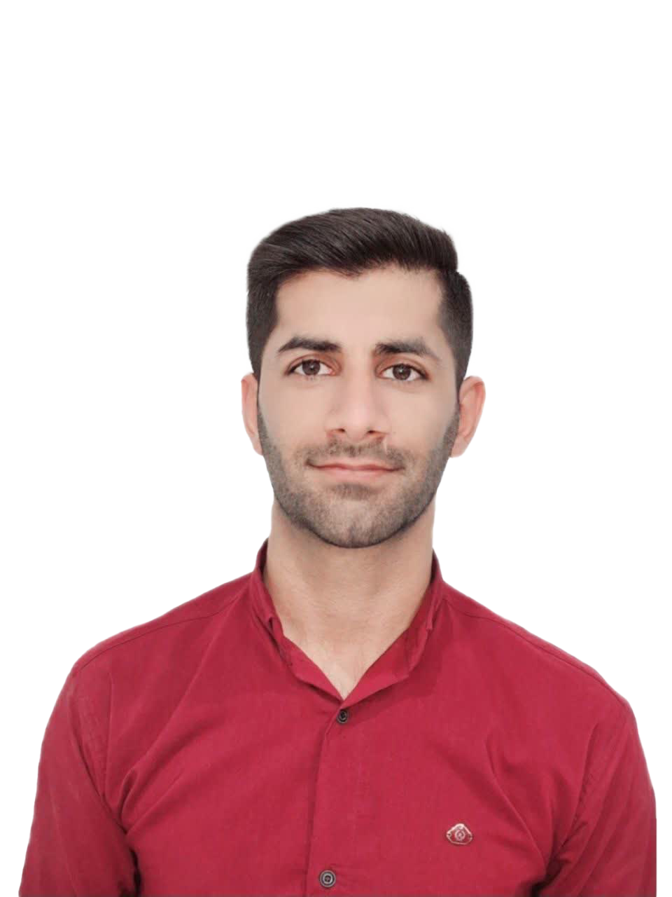

موسی امیری مطلق
تخصصهای فنی: تمرکز اصلی او بر روی توسعه سمت سرور (Backend) با استفاده از اکوسیستم .NET و زبان برنامهنویسی C# است. او در زمینه طراحی ساختار بانکهای اطلاعاتی، توسعه APIها و پیادهسازی منطق سیستمها فعالیت میکند.

تخصصهای فنی: تمرکز اصلی او بر روی توسعه سمت سرور (Backend) با استفاده از اکوسیستم .NET و زبان برنامهنویسی C# است. او در زمینه طراحی ساختار بانکهای اطلاعاتی، توسعه APIها و پیادهسازی منطق سیستمها فعالیت میکند.